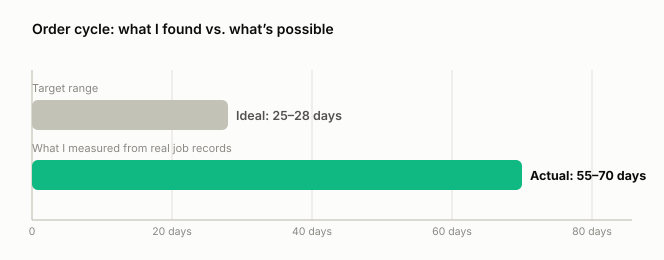
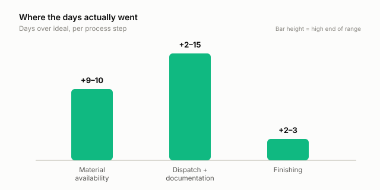
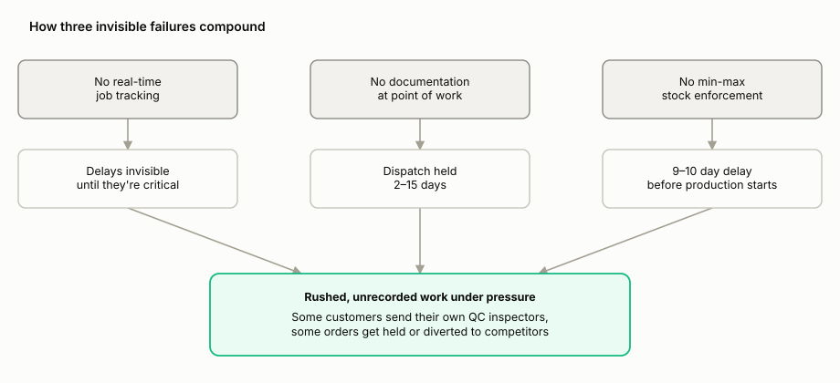

A structural steel manufacturer's order cycle ran 55 to 70 days against an ideal of 25 to 28. Before recommending a single tool, I mapped the business end to end to find out where the time was actually going.
Most modernization conversations start with the tool: which AI copilot, which automation platform, which ERP module. That skips the step that determines whether any of it works: knowing, in verifiable detail, how the work happens right now. Skip it, and you're not modernizing a process. You're automating a guess, faster.
The industry in this case study is manufacturing. The method isn't industry-specific: map the real process, name an owner for every step, measure ideal against actual, sequence the fixes by impact before touching a tool. That's what I run on every engagement, D2C or otherwise, and this is what it looked like on one of them.
Client and location names below are anonymized ("Meridian Engineering", "Plant A", "Plant B"). Every process, number, and finding is real.
The gap between ideal and actual cycle time traced back to three failures, none of them about the workers or the equipment: no real-time job tracking, no documentation at point of work, and no minimum-stock enforcement.
Those three compound. Fixing just the top two recovers an estimated 12 to 25 days from the cycle.



Build the manual process first. The data comes from discipline, not from technology. Once that discipline is in place to feed them real data, four automations are scoped and ready to build, each 2 to 6 hours of build time on tools the business already had:
| Process step | Ideal | Actual | Root cause |
|---|---|---|---|
| Raw material availability | 2–3 days | 12 days | Min-max stock policy existed but wasn't enforced |
| Dispatch + documentation | Same day | 2–15 days | Records filled in retroactively, not at point of work |
| Finishing | 1 day | 3–4 days | Understaffed relative to job volume; rework from upstream defects |
| Payment collection | ≤45 days from GRN | >45 days, consistently | Every upstream delay pushes the payment clock later |
To know more, contact:
LinkedIn